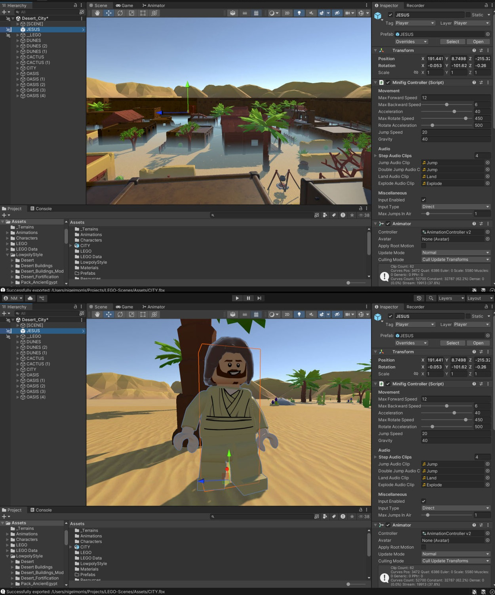

About
Pixelagent is a solo development studio. I create games, web apps, and custom software tools — building things I'd actually want to use myself.
Follow Us
Blender Extensions
© Copyright 2025 Pixelagent - All Rights Reserved
As an educator, developer, and creative technologist with a passion for combining storytelling, design, and interactive media. With over two decades of experience in digital animation, game development, and web technologies, I’ve led projects for global brands, taught the next generation of creators, and helped shape the future of digital learning.
Currently, I lead and lecture on courses in Animation, Illustration, and Games Development. My expertise spans a wide range of tools and platforms including Unity, Blender, Adobe Creative Suite, Toon Boom, and Unreal Engine. I also have a strong background in coding (C#, PHP, .NET), UI/UX design, and content management systems like Umbraco and WordPress.
Whether managing complex development teams, designing award-winning digital experiences, or mentoring students in interactive storytelling, I bring energy, creativity, and a strong technical foundation to everything I do. My current focus? Creating immersive, creative games and developer tools for young audiences.

Currently focused on browser-based creative tools and experimental games. Crafting experiences that challenge conventions and explore new forms of interactive expression.
Every great game starts with a question. We explore narrative frameworks, player psychology, and emotional resonance. From raw concept to cohesive vision, we map out worlds that feel alive before a single line of code is written.
Rapid iteration transforms abstract concepts into tangible mechanics. We build, break, and rebuild—testing movement, interaction, and feel. Graybox levels become playgrounds where theory meets reality, and emergent gameplay reveals itself.
Levels expand into narrative arcs. Each environment tells a story through lighting, sound, and spatial design. We weave together animation, music, and interaction into seamless choreography where every frame serves the player's emotional journey.
Perfection is found in subtraction. We refine controls to feel intuitive, optimize performance to buttery smoothness, and add accessibility features that welcome every player. This is where good games become unforgettable experiences.
The final leap of faith. We share our creation with communities, gather feedback, and watch as players discover secrets we never imagined. Post-launch, we iterate, expand, and continue building bridges between imagination and reality.
Interactive comic book experiences exploring timeless narratives. Each story is set in a real-world location, rendered on the globe above.
Pixelagent is a solo development studio. I create games, web apps, and custom software tools — building things I'd actually want to use myself.
© Copyright 2025 Pixelagent - All Rights Reserved